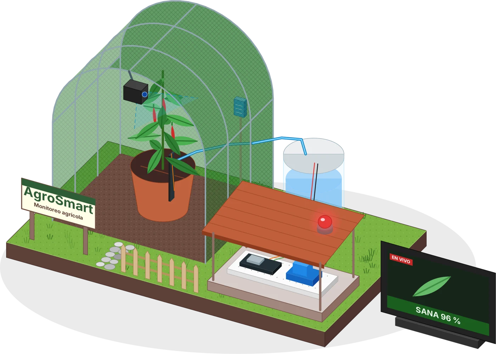
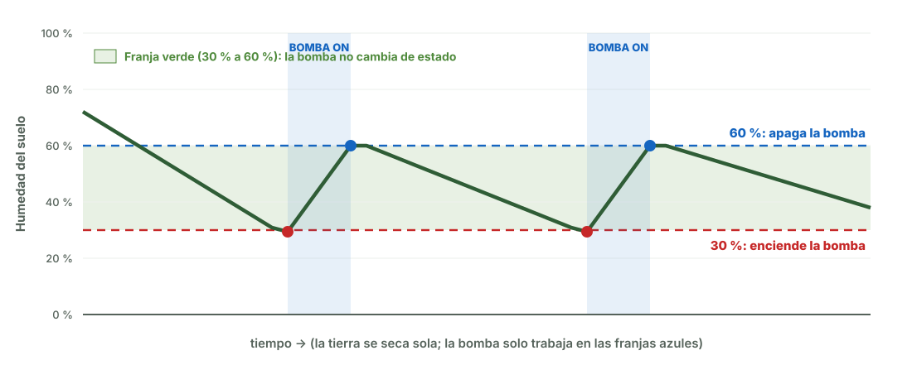
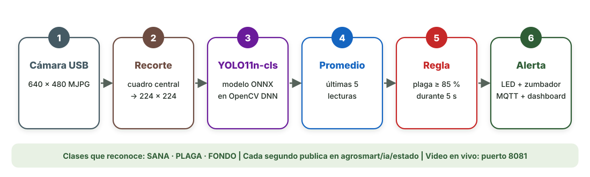
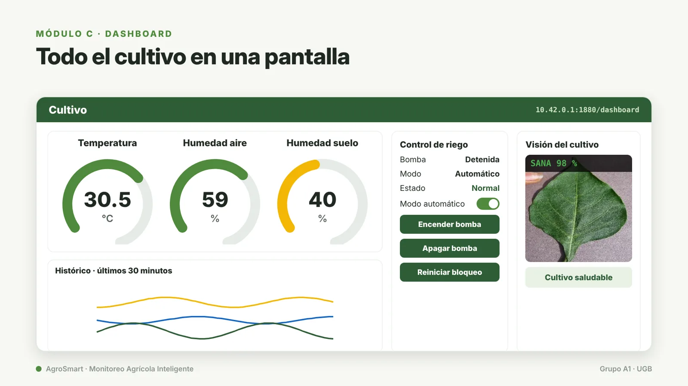
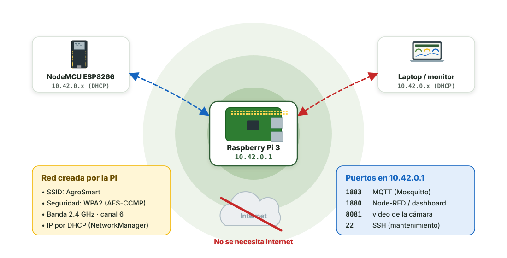

+0 %
del agua dulce extraída en el mundo se usa en la agricultura
Regar «a ojo» o con horario fijo desperdicia agua.
Feria de Hardware y Automatización · UGB
Monitoreo Agrícola Inteligente
Un invernadero que se riega solo cuando la tierra lo necesita, revisa sus hojas con inteligencia artificial y muestra todo en vivo. Sin internet.

El problema
+0 %
Regar «a ojo» o con horario fijo desperdicia agua.
hasta 0 %
Detectarlas tarde cuesta cosechas.
Sin señal
Las soluciones «en la nube» no llegan al campo.
Fuente: FAO, Organización de las Naciones Unidas para la Alimentación y la Agricultura.
Nuestra solución
Módulo A
Mide la humedad del suelo y riega únicamente cuando baja de 30 %, hasta llegar a 60 %.
Módulo B
Una cámara con inteligencia artificial reconoce hojas enfermas y activa una alarma.
Módulo C
Dashboard en vivo: sensores, histórico, control de la bomba y estado del cultivo.
Arquitectura
Una Raspberry Pi es el cerebro y todos se conectan a ella por su propia red Wi-Fi.
Un NodeMCU ESP8266 lee los sensores cada 2 segundos, decide si riega y manda los datos por Wi-Fi a la Raspberry Pi.
La decisión de regar se toma dentro del NodeMCU: aunque la Pi se apague, el riego sigue funcionando.

Una cámara USB mira la planta y un modelo YOLO11n-cls clasifica cada imagen como sana, plaga o fondo, dentro de la Raspberry Pi.

Una página web servida por la Raspberry Pi en 10.42.0.1:1880/dashboard.

La Raspberry Pi no se conecta a un router: ella es el router. Crea la red Wi-Fi AgroSmart y reparte las direcciones IP.
10.42.0.1
Comunicación
Elige un mensaje y mira cómo pasa por el broker Mosquitto hasta llegar a su destino.
Qué está pasando
Toca un botón para enviar un mensaje.
Mensaje
tema: — carga: —
Simulador interactivo
Usa la misma lógica que el firmware del NodeMCU: histéresis 30/60 %, máximo 10 s, reposo de 60 s y bloqueo tras 3 cortes.
HUMEDAD DEL SUELO
45%
Humedad del suelo en el tiempo
Registro de eventos
Visión artificial
Elige una imagen y mira cómo se aplica la regla de alerta: plaga con 85 % o más durante 5 segundos.
Modo simulación: los porcentajes son de ejemplo. Imágenes del dataset público PlantVillage.
Probabilidad por clase
Regla de alerta
Esperando una hoja con plaga…
LED + zumbador
Sirena de 4500 / 3500 Hz
Buscando el modelo…
Seguridad del riego
10 s
máximo encendida
Si se pasa, se corta sola y avisa.
60 s
de reposo
El agua se filtra antes de volver a medir.
3 cortes
= depósito vacío
Bloquea el riego para cuidar la bomba.
Hardware
Sensores a 3.3 V, relé y bomba a 5 V, alarma en los pines 38, 39 y 40 de la Raspberry Pi.
| Componente | Pin | Va a |
|---|---|---|
| Sensor de suelo | AOUT · VCC · GND | A0 · 3V · G |
| DHT11 | S · + · − | D2 · 3V · G |
| Relé | S · + · − | D1 · 5 V (VU) · GND |
| Relé (tornillos) | COM · NO | 5 V · rojo de la bomba |
| Bomba | rojo · negro | NO del relé · GND |
| Diodo 1N4148 | raya · otra pata | rojo (+) · negro (−) |
| Pin físico | Nombre | Va a |
|---|---|---|
| 38 | GPIO20 | 220 Ω → pata larga del LED |
| 40 | GPIO21 | 220 Ω → (+) del zumbador |
| 39 | GND | pata corta del LED y (−) del zumbador |
| USB | — | Cámara |
Galería
Demostración
Video de la demostración
Muy pronto: el sistema regando, detectando una plaga y activando la alarma. Mientras tanto, pásate por el stand para verlo en vivo.
0 s
cada cuánto llegan los datos
30/60
% para encender y apagar el riego
0 s
máximo de bomba encendida
0 %
de confianza durante 5 s para la alarma
conexión a internet necesaria
0
clases: sana, plaga y fondo
0
temas MQTT
1.5 M
parámetros del modelo YOLO11n
Preguntas frecuentes
Ponte a prueba
Grupo A1
Ingeniería en Sistemas y Redes Informáticas · Universidad Gerardo Barrios